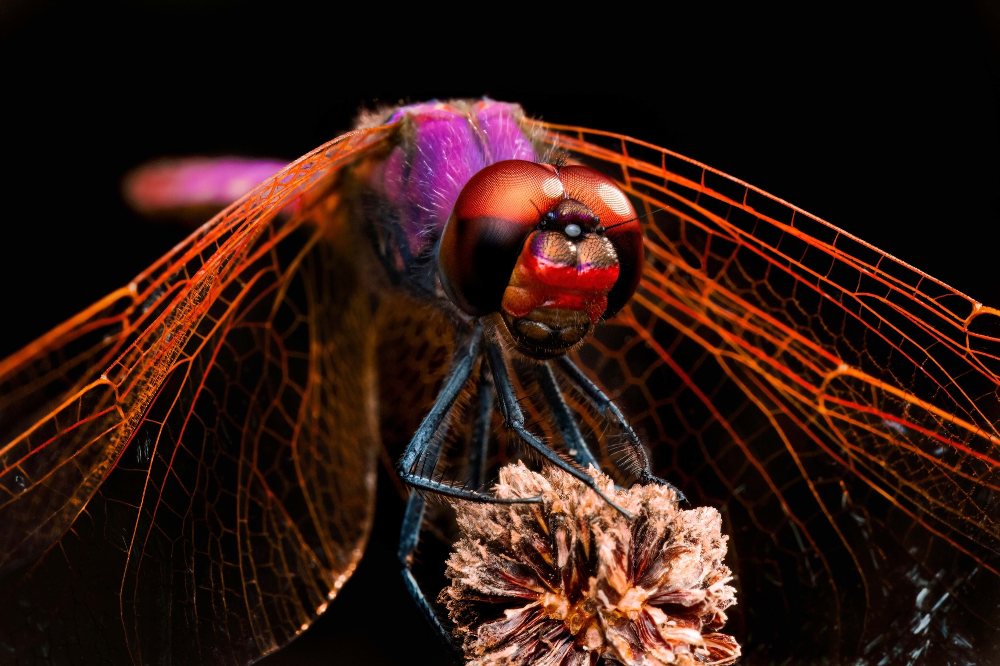
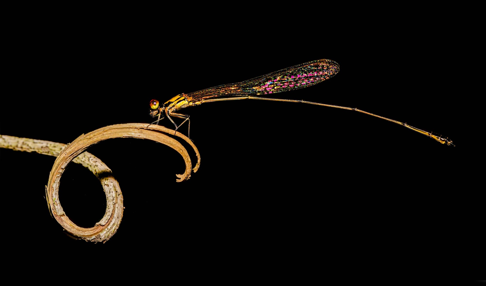
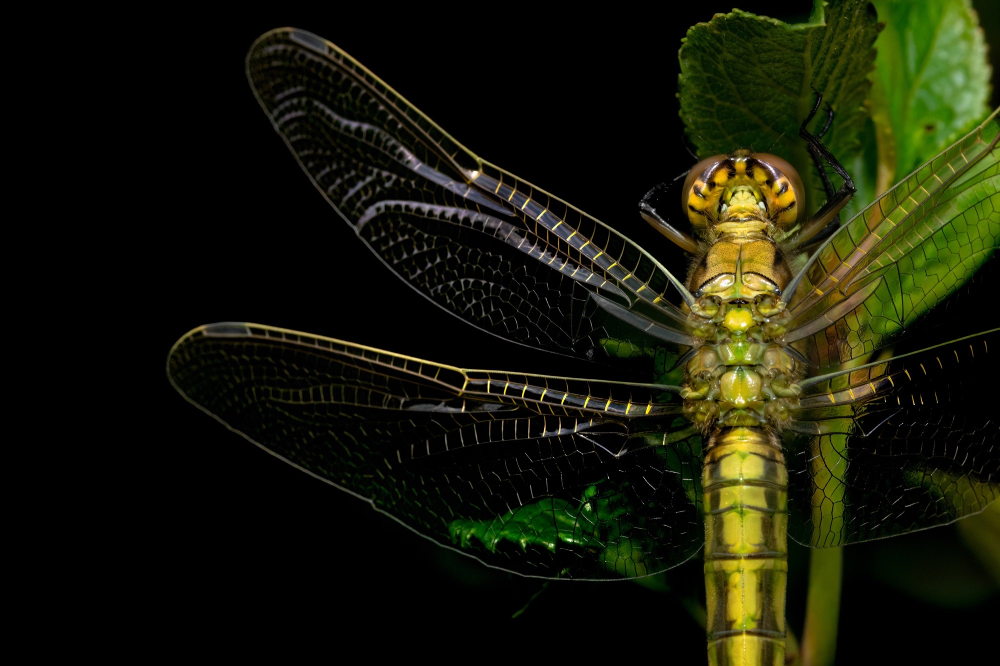
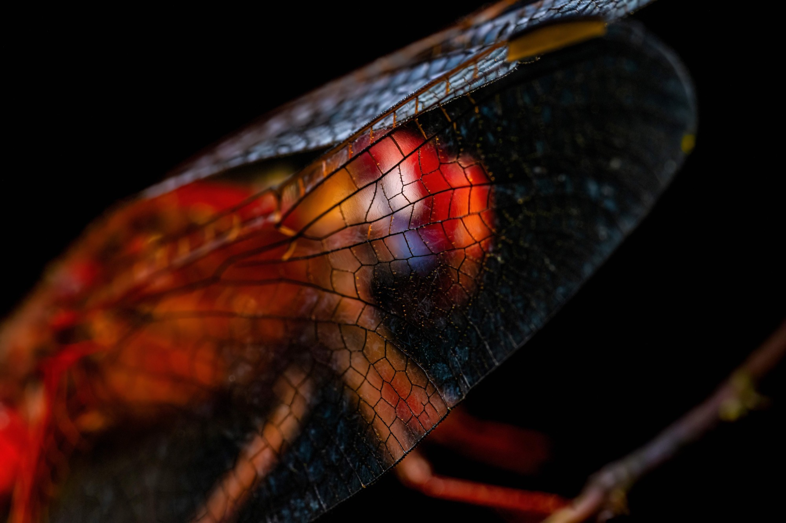
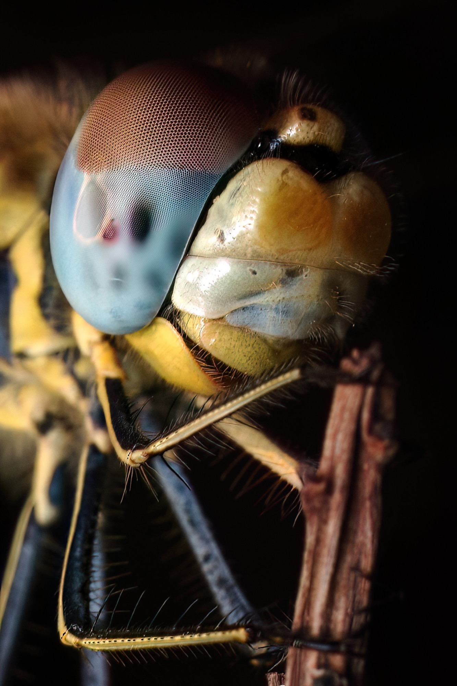
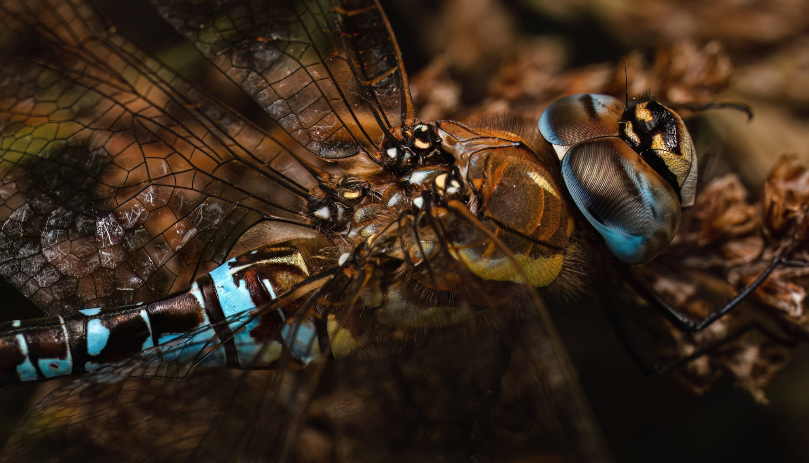
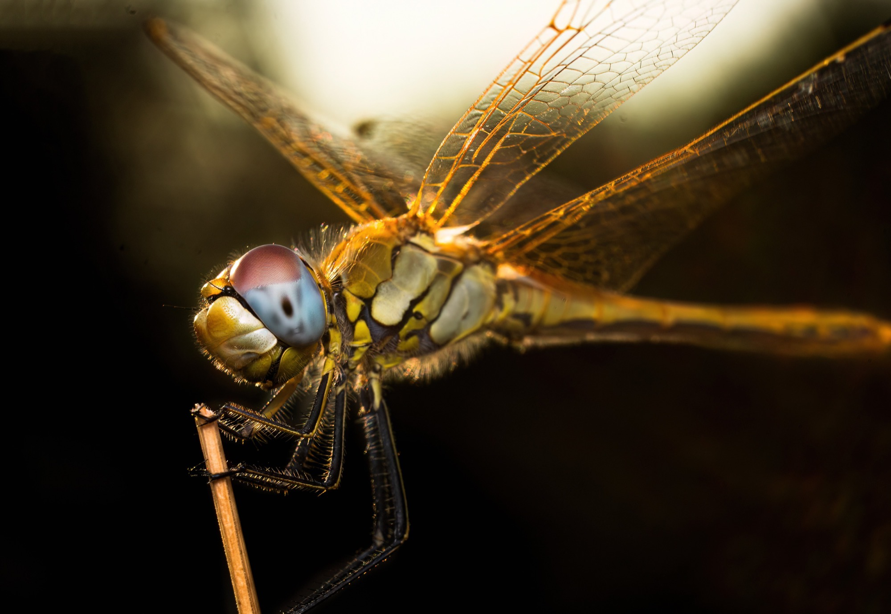
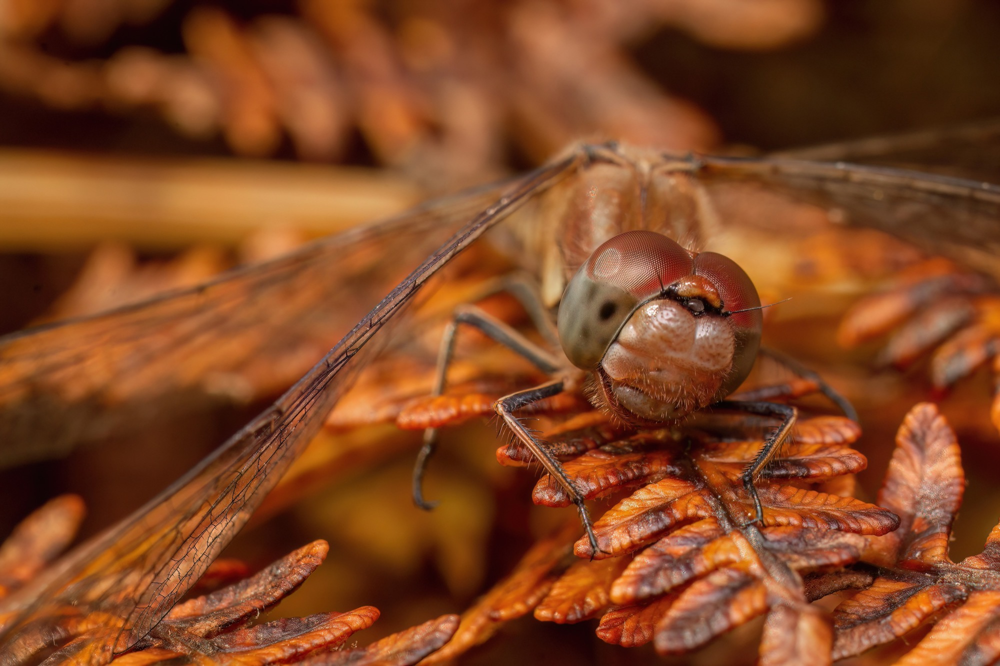
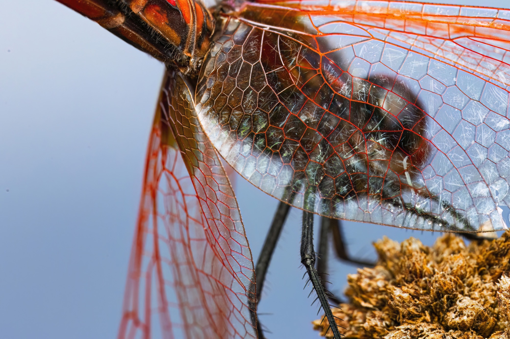

Study
Dragonflies
Odonata: two pairs of wings held open in the dark, and the oldest flying design still in the air.

Expand{kind=link}
Plate XXVII
Veined Wings
A dragonfly at rest, the venation of the wings reading like drawing on tracing paper.
Shadow →
Expand{kind=link}
Plate XXVIII
The Tendril
A damselfly balances on a dry curl of stem: two spirals, one living, one not.
Shadow →
Expand{kind=link}
Plate XXXVII
Glasswing
Wings held flat and open, their panes so clear the leaves behind them show straight through.
Shadow →
Expand{kind=link}
Plate XXXVIII
Through the Glass
Close enough that the wing becomes a window, the body behind it broken into coloured cells.
Shadow →
Expand{kind=link}
Plate XXXIX
The Blue Eye
A head turned in profile, the compound eye shading from rust to pale blue across its curve.
Shadow →
Expand{kind=link}
Plate XL
Blue Segments
Brown wings folded over a body banded in chalk blue, the animal the colour of the litter it rests on.
Shadow →
Expand{kind=link}
Plate XLI
Low Sun
Late light comes through from behind, turning the wings amber and leaving the perch in shadow.
Shadow →
Expand{kind=link}
Plate I
Among the Bracken
Dead bracken fills the frame in every direction, and the dragonfly is the one thing holding still.
Dragonflies
Expand{kind=link}
Plate II
Behind Her Veil
Seen against open sky, the wing reads as red lace laid over the body it hides.
Dragonflies